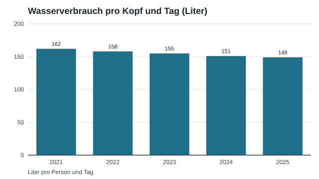

Wasserverbrauch
Der durchschnittliche Wasserverbrauch der Haushalte ist in den letzten fünf Jahren leicht gesunken.

| Jahr | Liter |
|---|---|
| 2021 | 162 |
| 2022 | 158 |
| 2023 | 155 |
| 2024 | 151 |
| 2025 | 149 |
Kontakt
Werke Beispielberg
Lindenweg 14
Telefon 032 000 14 90
info@werke-beispielberg.example